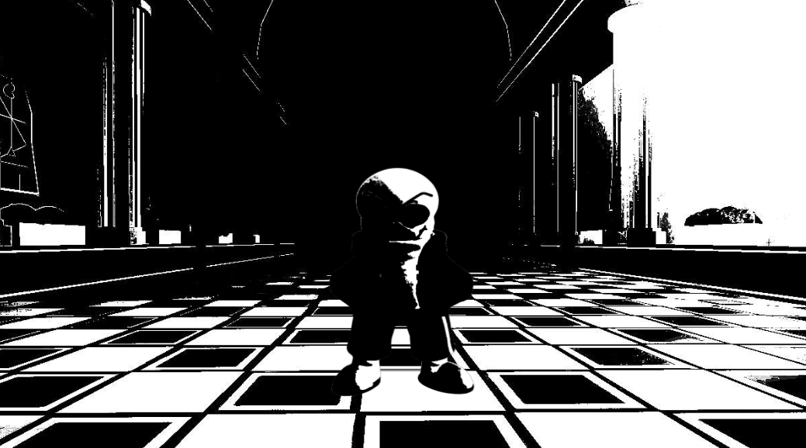

Introduction Page
Phase 1
Phase 2
Undertale : Last Corridor
Green
Sans [Lite]
Phase 2
Information
* You Check, Green Sans
* ATK 34 DEF 1
* Stamina : 215 (Final Attack Is Removed In Exchange)
* He Seems Angry...
* It Seems He Has Equipments To Increase His ATK...Get Ready For The REAL Battle .
Starting Cutscene
Green Sans Will First Have A Dialogue Before The Screen Fades To Black
-Phase 1 Music Abruptly stops-
"Hey! You Almost Ripped My Favorite Jacket"
"Now Im Really MAD"
(Then The Screen Blinks)
-Phase 2 Starts-
(The Theme )
(The Title : JACKET TEARIN By Alminum The squeal)
(Or You Can Check It Out Here : https://youtu.be/RM4PXsf1wVI?si=zmFJuppKD7PAA_8V )
Passive
The Happiest Meal
every 45s A Happy Meal Spawn In A Random Place Around The Corridor
(Chara's Could Destroy The Happy Meal By Steping Over It Or Attacking It With Ranged Attacks)
(Sans Will Heal 30 Stamina If He Got The Happy Meal)
(Will Despawn After 20s)
* What Happens When The Happy Meal Gets Destroyed?
It Will explode And Make Sans... Well...

With The Following Sound effect
Freezes everyone In Place For 3s
(Music Stops Playing)
(Chara And Sans Wouldn't Be Able To Attack)
(Freezes Green Sans Cooldown And Stamina Regen)
(Just A Meme Thing With No Benefit)
* Equipments
Green Sans Now Comes Equiped With Weapons (Box Attack -> Modes)
Available Attack
(Main Mode)
G-Money Blasters
(15 stamina cost)
(CD : 12s)
- Bone Melee
(8 stamina cost)
(CD : 6s)
- Bone Barrage
(16 stamina cost)
(CD : 24s)
Summon 2 Giant Blaster That Charges At The Nearest Chara, After Charging Will Shoot To Random Charas
And After Shooting The Blasters would split into 2 Smaller Blasters, The Smaller Blasters Will Shoot Random Colored Bones
(Charge Damage : 10Hp, (Charge Has No KR damage))
(Blasters And Bones Does The Usual Damage of 1 and KR)
Summon A Singular Bone For Sans To Grab And Swing Infront of him
(Can Knock Charas Weapon off with a 30% Chance)
(Damage : 8Hp)
A "!" Would Appear On The Side Of The Corridor And Summon Jumping Jack Bones While Also AutoAimed Bone Zones On The Charas
(Jumping Jack Bones Will Spawn On The Sans And Chara Side Corridor (5 Long Bones + spawning from 2 side = 10 Long Bones))
(Does The Usual Damage Of 1 With KR)
- Wet Floor
(10 Stamina Cost)
(CD : 12s)
- Pipe Bomb
(10 stamina cost)
(CD : 10s)
- Trash Tornado
(10 stamina cost)
(CD : 16s)
Green Sans Will Put A Wet Floor Sign Beneath Him, Despawns after 4s AndCharas that Passes Through would slip
(Charas That Slip Would Stay On The Ground for 2s )
Green Sans Pulls Out A Pipe Bomb And Proceed To Throw It Infront of Him, Exploding After 0.5s
(Damage : 16Hp)
Summon A Small Sized Tornado Filled With Crumbled Paper
(Does The Usual 1 damage with KR)
Moves To Change Modes
(Appear As A Button "Switch Equipments")
(Main Mode -> Saber Mode -> Gun Mode)
(The Button Is Shared Through All The Modes)
(Switching Has A CD : 6s)
- LightSaber Mode
- Gun Mode
-Main Mode
Summons A Green Light Saber And Grabs It With His Left Hand
Green Sans Pull Out His Left Hand And Revealing A Gun
Green Sans Places His Hands In His Pockets
Available Attacks
(LightSaber Mode)
(How It Would Look Like)
* Info
Sans Is Able To Swing Using m1 With No Attacks equipped
(Damage : 6)
(CD : 5s)
- Saber Blink
(Stamina Usage : 20)
(CD : 14s)
- High Ground
(Stamina Usage, Lands: 0 Stamina , Miss : 15 Stamina)
(CD : 16s)
- (Insert Attack Name)
(Stamina Usage : (Insert Stamina Use))
(CD : (Insert CD))
A "!" Would Appear On Top Of Green Sans For 1s, After Which Green Sans Would Dash Foward For A Short Distance With Great Speed
And Green Sans Will Say "Omae Wa Mou Shindeiru"
(If A Chara Is Hit They Would Be Freezed In Place)
(While Freezed, Charas Wouldn't Be Able To Be Damaged By Other Attacks)
(Can Hit Multiple Charas)
(Damage : 10Hp)
Green Sans Would Glow Green And Any Chara Attacking Him Directly Would Be Countered
(Green Sans Would Proceed To Say "I Have The High Ground" Before The Chara Would Be Attacked By Slashes)
(Damage : 12Hp)
(Insert Attack Description)
Available Attacks
(Gun Mode)
(How It Would Look Like)
* Info
Sans Is Able To Shoot Using m1 With No Attacks equipped
(Shooting m1 Cost 1 Bullet, CD : 5s)
(Bullets : 10)
(Damage : 6)
(Unique : Moves Does Not Cause Stamina Usage But Bullets)
(Reloading Cost Stamina Usage : 10)
(Reloading Can Be Intrupted By Getting Attacked Or Switching Modes, But Green Sans Will Not Lose Stamina Usage On Reloading)
- (Insert Attack Name)
(Bullet Usage : (Insert Bullet Use))
(CD : (Insert CD))
- (Insert Attack Name)
(Bullet Usage : (Insert Bullet Use))
(CD : (Insert CD))
- (Insert Attack Name)
(Bullet Usage : (Insert Bullet Use))
(CD : (Insert CD))
(Insert Attack Description)
- (Insert Attack Description)
(Insert Attack Description)
Introduction Page
Phase 1
Phase 2